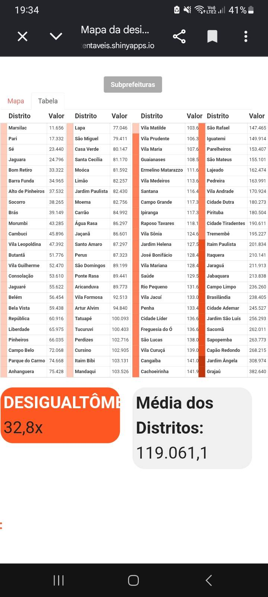
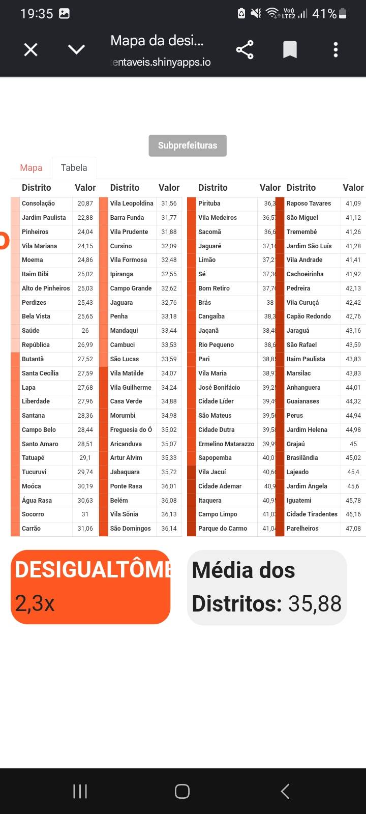
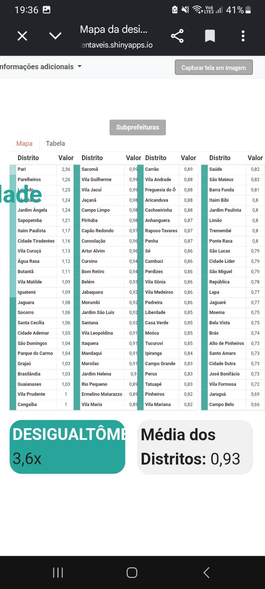
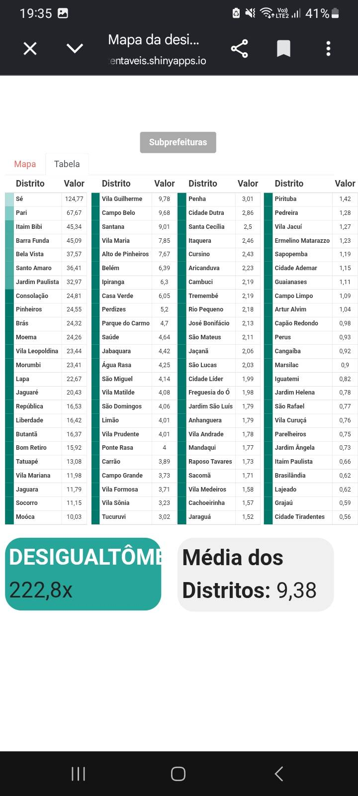

Concentração no setor comercial
Predominam estabelecimentos voltados à venda de produtos e ao atendimento ao público.
Cidade Tiradentes — História, trabalho e desenvolvimento
Cidade Tiradentes está localizada no extremo leste do município de São Paulo. Sua formação está relacionada à expansão urbana da capital paulista e à construção de grandes conjuntos habitacionais destinados a atender à demanda por moradia.
A partir da década de 1980, a região passou por uma intensa transformação, com a implantação de conjuntos habitacionais que receberam milhares de famílias. Esse processo contribuiu para o crescimento populacional e para a consolidação do bairro como uma importante área residencial da cidade.
Com o passar dos anos, Cidade Tiradentes desenvolveu uma identidade própria, marcada pela diversidade de seus moradores, pela cultura local, pelas iniciativas comunitárias e pela expansão do comércio e dos serviços. Ao mesmo tempo, o crescimento da região trouxe desafios relacionados ao acesso ao emprego, à mobilidade urbana e à oferta de serviços.
Compreender essa trajetória é importante para analisar a realidade econômica do bairro e refletir sobre como a criação de novas oportunidades profissionais pode contribuir para melhorar a qualidade de vida da população.
Como ampliar a diversidade de oportunidades de emprego e fortalecer o desenvolvimento econômico de Cidade Tiradentes?
O bairro apresenta um potencial significativo de desenvolvimento econômico e social. Entretanto, a partir das observações realizadas pelo grupo, identificamos uma concentração de oportunidades profissionais no setor comercial, principalmente em atividades relacionadas ao atendimento ao cliente, às vendas e à reposição de mercadorias.
A história da região também merece atenção. Nomes de vias como Avenida dos Metalúrgicos, Avenida dos Têxteis e Rua dos Gráficos remetem a diferentes atividades profissionais e industriais. Essa referência histórica nos leva a refletir sobre a relação entre o bairro, o trabalho e o desenvolvimento econômico ao longo do tempo.
O principal problema identificado é a limitada diversidade de oportunidades profissionais disponíveis na região. Apesar da presença de diversos estabelecimentos comerciais, percebemos que muitas vagas estão concentradas em funções semelhantes, especialmente no comércio de alimentos, roupas, calçados e outros produtos.
Essa concentração pode restringir as possibilidades de inserção profissional dos moradores, sobretudo daqueles que buscam oportunidades em áreas como tecnologia, administração, serviços especializados e outros setores que exigem diferentes níveis de qualificação.
Como consequência, parte da população pode continuar dependendo de oportunidades de trabalho em outras regiões, mantendo a necessidade de deslocamento diário e limitando o potencial de desenvolvimento econômico local.
A partir das observações realizadas pelo grupo, destacamos três aspectos principais:
Predominam estabelecimentos voltados à venda de produtos e ao atendimento ao público.
As oportunidades observadas estão concentradas principalmente em atividades de vendas, atendimento e reposição de mercadorias.
A ampliação de cursos profissionalizantes e preparatórios pode contribuir para que os moradores tenham acesso a novas áreas de atuação.
Também observamos a presença predominante de estabelecimentos comerciais formais, enquanto algumas atividades informais são desenvolvidas nas próprias residências.
Esses pontos constituem um diagnóstico inicial baseado nas observações do grupo. Para determinar a dimensão do problema, seria necessário realizar um levantamento mais amplo dos estabelecimentos e das vagas existentes no bairro.
Conheça um pouco da realidade do nosso bairro por meio destas imagens.




TCA — 9ºA | Matheus Máximo, Sherman Vinícius e Leonardo Chaves Site criado por Matheus Henrique da Silva Máximo
Voltar à página inicial ↑ Página 3 — Nossas observações →